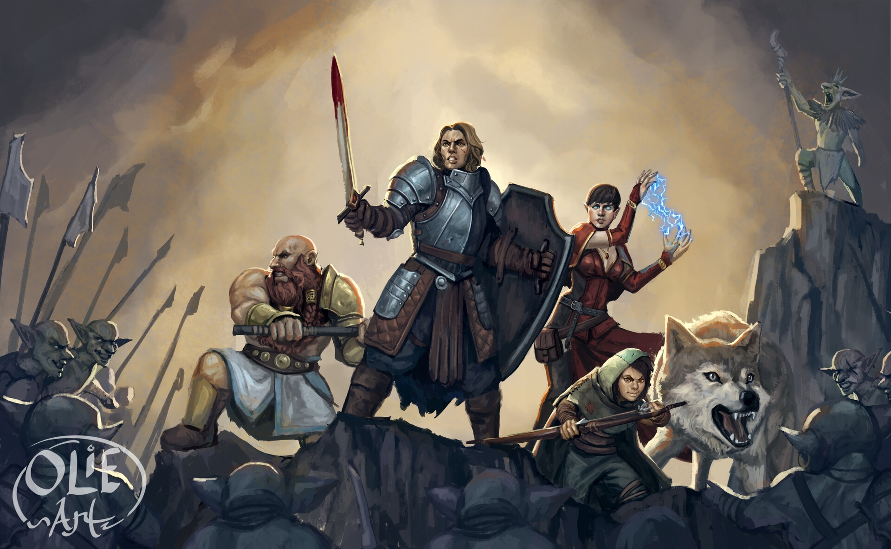
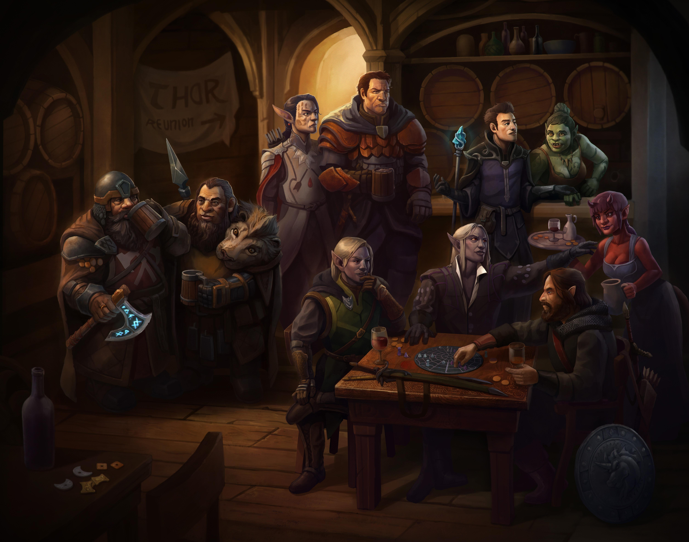
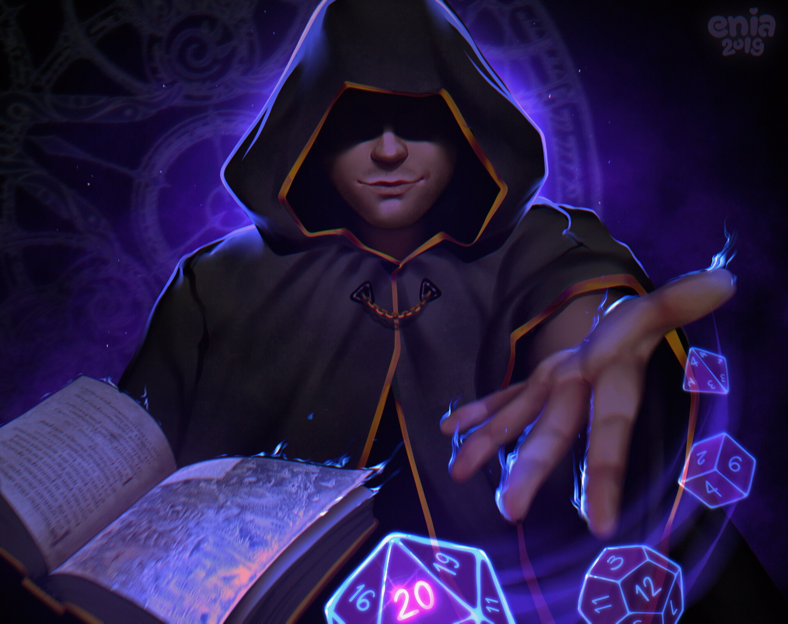

|
D&D  Dungeons & Dragons (D&D, DnD; Подземелья и драконы) — настольная ролевая игра в жанре фэнтези, разработанная Гэри Гайгэксом и Дэйвом Арнесоном. Впервые была издана в 1974 году компанией «Tactical Studies Rules, Inc.» (TSR). С 1997 года издаётся компанией «Wizards of the Coast» (WotC).История игры  Изначально Dungeons & Dragons представляла собой дополнение к настольному варгейму «Chainmail». Основным отличием являлось введение в игру различных фантастических существ и волшебных предметов. Впоследствии под управлением игроков оказались не военные отряды, а отдельные персонажи, действие игр было перенесено в подземелья. Ведущий (Dungeon Master) является арбитром и рассказчиком. Игроки создают группу из нескольких персонажей, которая взаимодействует с окружающим миром, разрешает различные конфликты, участвует в сражениях и получает награды. Структура игры  В игре участвуют ведущий (так называемый «мастер») и несколько игроков, число которых варьируется в зависимости от редакции и пожеланий участников. Обычно один игрок руководит в игровом мире действиями одного персонажа. Мастер действует от лица всех неигровых персонажей, описывает окружающую среду и происходящие в ней события. В течение игры каждый участник задаёт действия для своего персонажа, а результаты действий определяются мастером в соответствии с правилами. Случайные события моделируются броском кубика. Иногда решения мастера могут не соответствовать правилам. Это является Золотым правилом игры: «ДМ всегда прав», так называемым «мастерским произволом». Традиционно руководство игры или свод правил включает в себя три книги: «Player’s Handbook», «Dungeon Master’s Guide» и «Monster Manual». Также существуют различные дополнения, которые мастер может использовать по своему усмотрению. Иногда для игры используются различные карты, чтобы визуально изобразить ситуации в игре, также могут использоваться фигурки персонажей и их противников. Но основным, а иногда и единственным требованием для игры является наличие листов персонажей и набора кубиков — дайсов — игральных костей с заданным числом сторон (d4, d6, d8, d10, d12, d20, d100 (процентовый кубик)). |